Extend a product that already exists, running only the stages the feature needs and keeping every number.
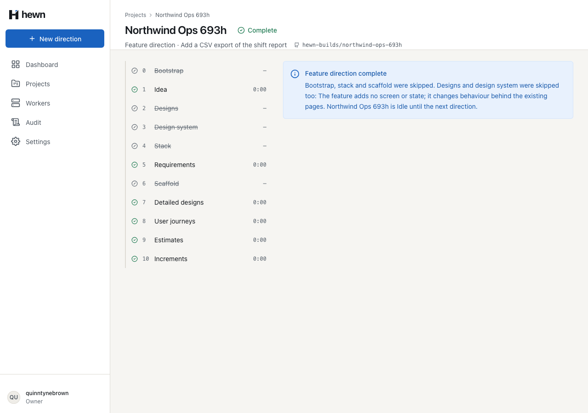
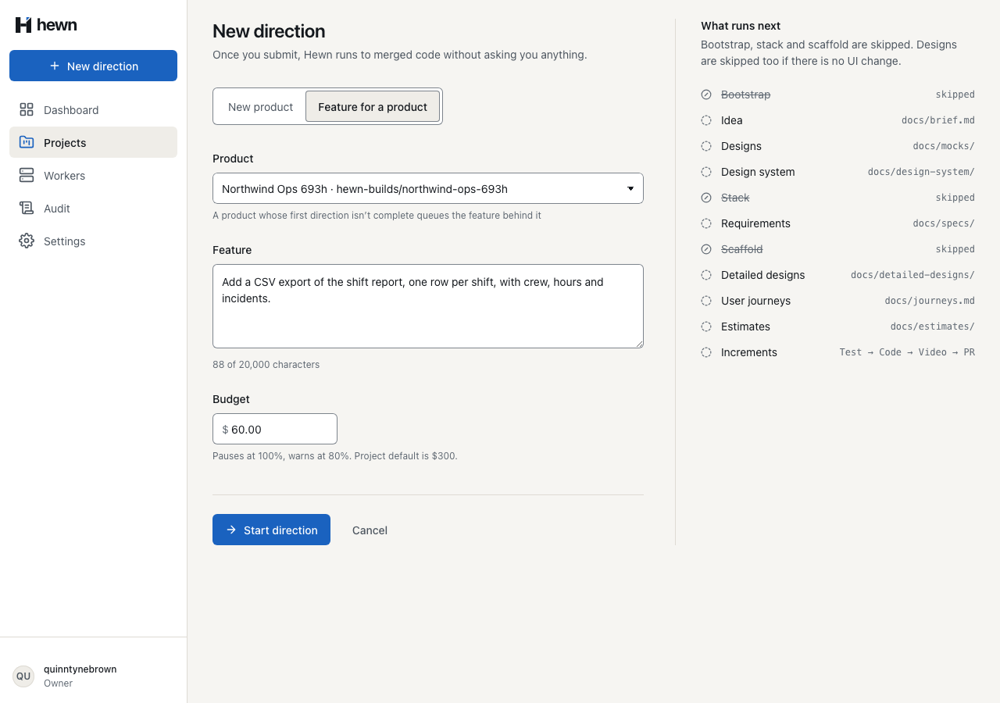
var project = await db.Projects.Include(p => p.Directions)
.SingleOrDefaultAsync(p => p.Id == command.ProjectId, cancellationToken)
?? throw new NotFoundException();
var startsNow = project.AddFeatureDirection(command.Idea!, command.BudgetUsd, user.Login, clock.GetUtcNow(), out var direction);
db.Directions.Add(direction); // a new child with its own key; EF would otherwise treat it as an existing row
await events.AppendAsync(
project.Id,
"DirectionQueued",
new { directionId = direction.Id, kind = direction.Kind.ToString(), stage = direction.FirstStage, stageStatus = StageStatus.Pending.ToString(), startsNow, direction = GetProjectHandler.ToDto(direction) },
cancellationToken);
if (startsNow)
{
await pipeline.StartDirectionAsync(project, direction, cancellationToken);
}
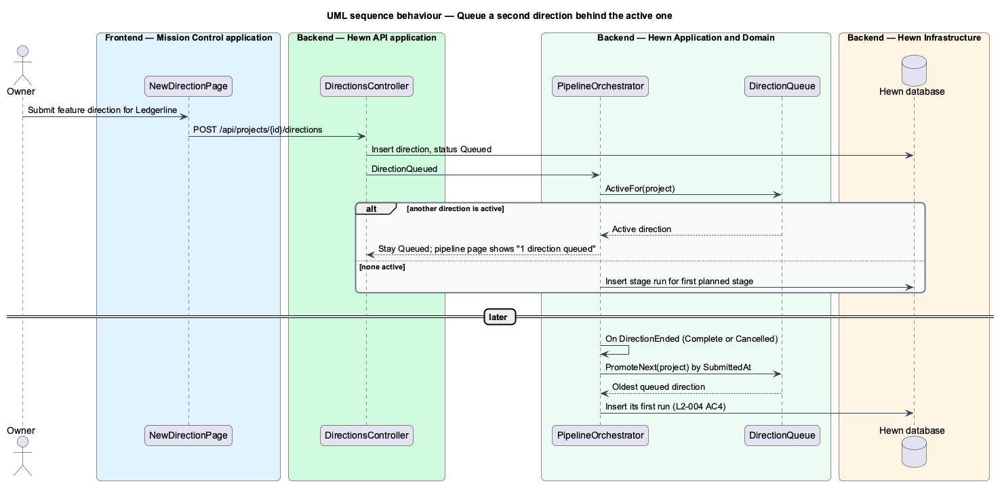
await AppendDirectionAsync(direction, cancellationToken);
if (project.NextQueuedDirection(direction.Id) is { } queued)
{
// One direction per project, first in, first out (L2-004 AC4, L2-005 AC4).
await StartDirectionAsync(project, queued, cancellationToken);
return;
}
project.ChangeStatus(ProjectStatus.Idle);
await AppendProjectAsync(project, cancellationToken);
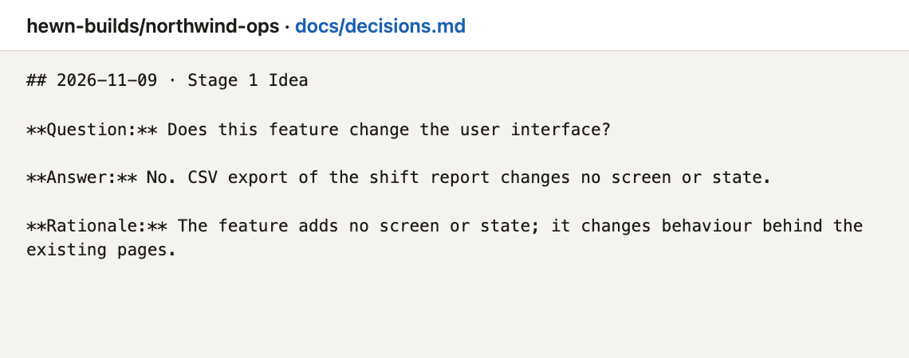
HasUiChange = hasUiChange;
UiDecision = rationale;
var skipped = new List<StageState>();
foreach (var number in UiStages)
{
var stage = Stage(number);
if (hasUiChange || stage.Status != StageStatus.Pending)
{
continue;
}
stage.End(StageStatus.Skipped, now);
skipped.Add(stage);
}
return skipped;
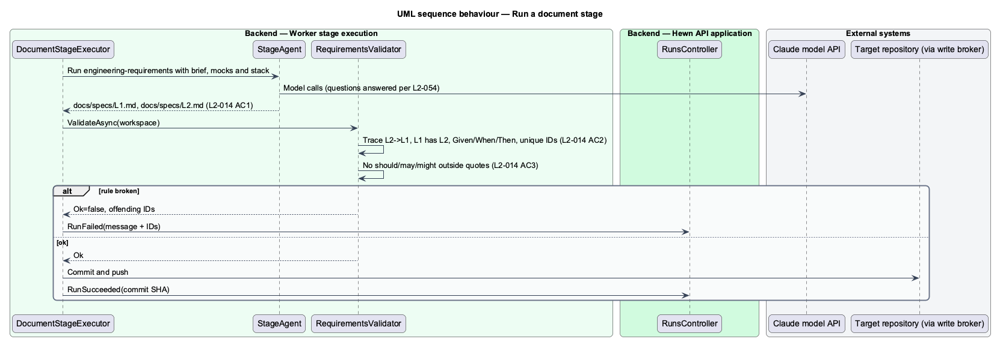
const old = numbers(before);
const now = numbers(after);
const highest = Math.max(0, ...old.map(Number));
const width = old[0]?.length ?? 1;
return [
...old.filter((n) => !now.includes(n)).map((n) => `${path} dropped ${label(n)}`),
...now
.filter((n) => !old.includes(n) && Number(n) <= highest)
.map(
(n) =>
`${path} numbers new ${label(n)} below the next free number, ${label(String(highest + 1).padStart(width, '0'))}`,
),
];
// Designs an earlier direction already built are neither descoped nor planned again (L2-005 AC1). const unbuilt = designs.filter((d) => d.completePercent < 100); const deferred = descope(workspace, unbuilt, journeys, thresholdDays); const deferredNames = new Set(deferred.map((d) => d.design)); const active = designs.filter((d) => !deferredNames.has(d.design)); const increments = order( active.filter((d) => d.completePercent < 100), journeys, thresholdDays, );
var stages = await worker.RunUntilIdleAsync();
Assert.Equal([1, 2, 3, 5, 7, 8, 9, 10], stages);
var project = await HewnClient.ReadJsonAsync(await owner.GetAsync($"/api/projects/{projectId}"));
Assert.Equal("Idle", project.GetProperty("status").GetString());
var done = project.GetProperty("directions")[1];
Assert.Equal("Complete", done.GetProperty("status").GetString());
Assert.Equal(["Skipped", "Succeeded", "Succeeded", "Succeeded", "Skipped", "Succeeded", "Skipped", "Succeeded", "Succeeded", "Succeeded", "Succeeded"], Statuses(done));
13 new, real API
11 new, fake APIs
Behaviour 12 · a11y 7 · visual 3 · pipeline 6
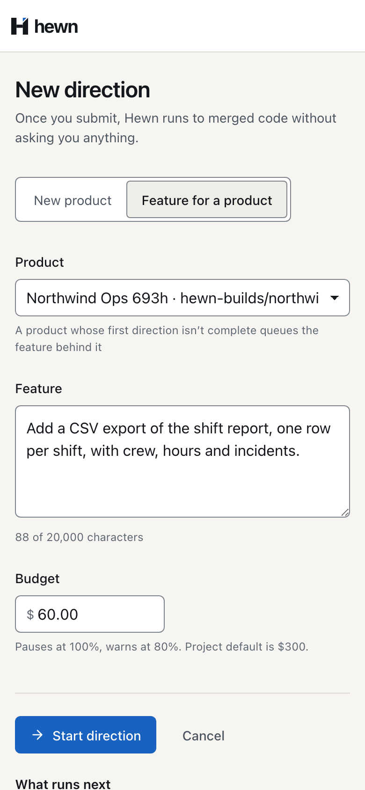
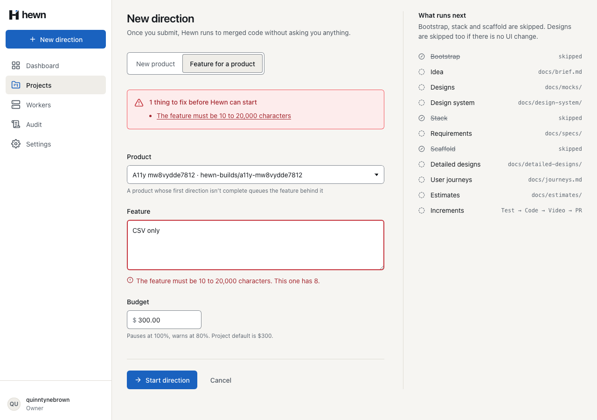
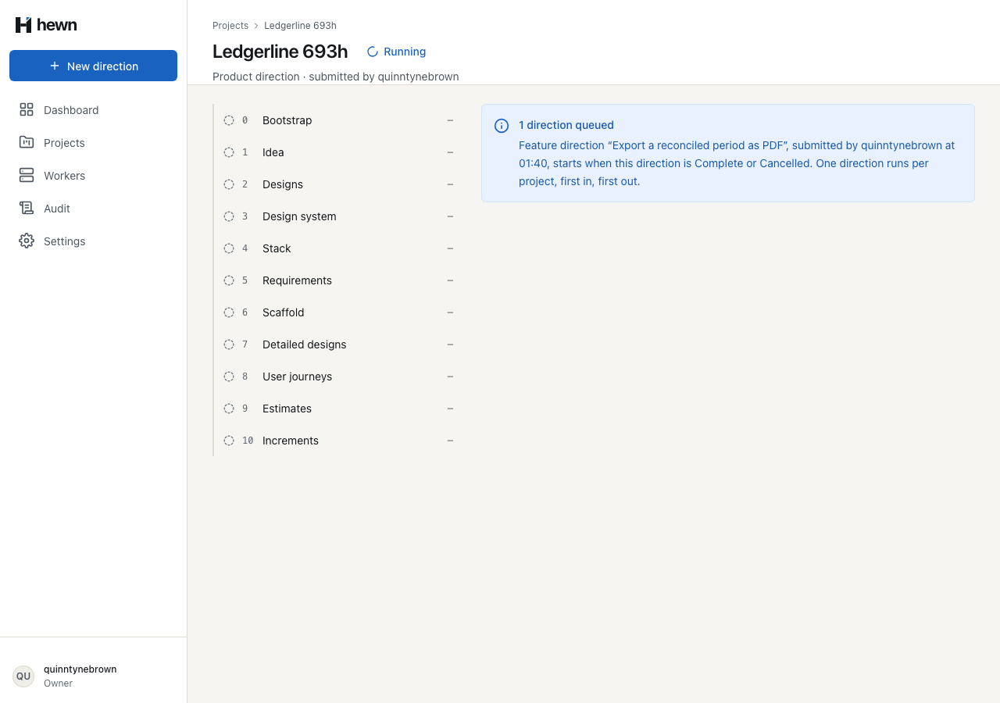
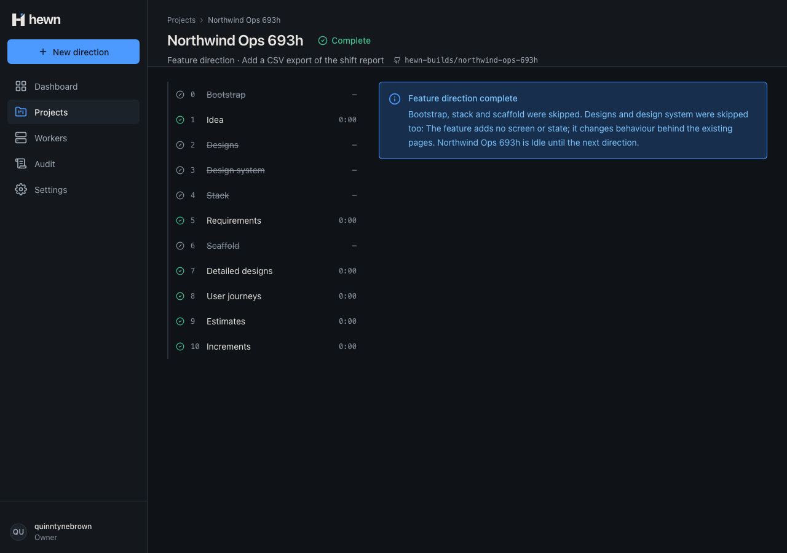
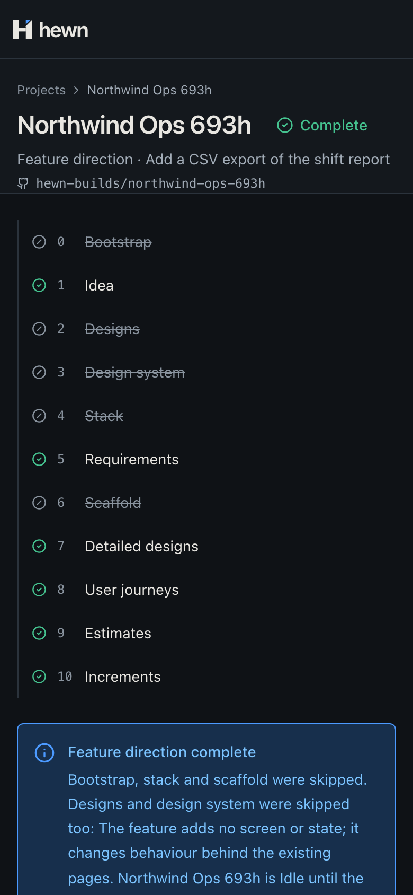
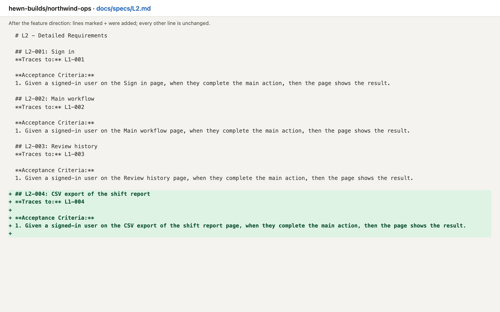
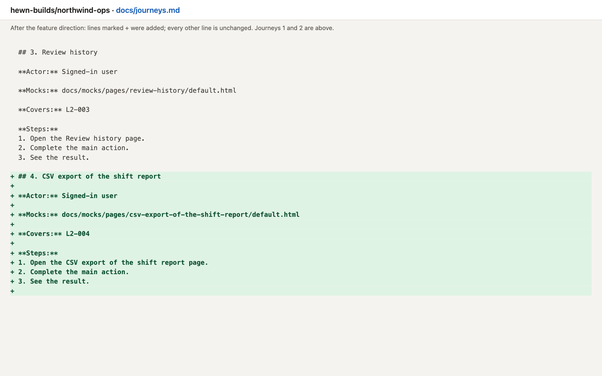
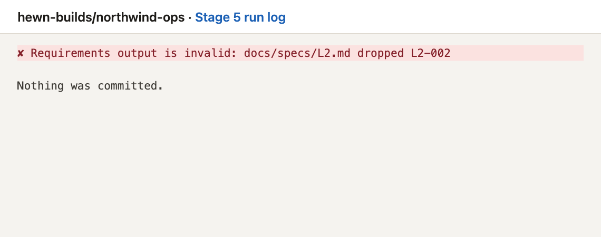